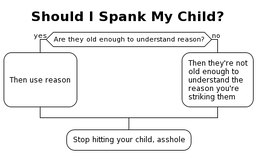

<meta charset="UTF-8">
<meta name="viewport" content="width=device-width, initial-scale=1">
<link rel="stylesheet" href="base.css">
<title>Flowchart Template</title>
<main>
  <h1>Flowchart Template</h1>
  <figure class="right">
    <table align="right"><tbody>
      <tr>
        <td>
          <a href="media/flowchart-template.png">
            
          </a>
        </td>
      </tr>
      <tr>
        <td align="center">
          <figcaption>Example flowchart based on that one flowchart we've all seen a million times but don't know where it came from</figcaption>
        </td>
      </tr>
    </tbody></table>
  </figure>
  <p>This is how I use PlantUML to generate flowcharts</p>
  <p>Flowcharts, or activity diagrams, are commonplace in PlantUML. This page is meant only to highlight the small bit of boilerplate I use and to encourage you to make flowcharts of your own</p>
  <textarea cols="80" rows="20">
@startuml
!theme plain
skinparam ConditionEndStyle hline
skinparam ArrowHeadColor none

title Should I Spank My Child?
if (Are they old enough to understand reason?) then (yes)
  :

Then use reason

;
else (no)
  :Then they're not 
old enough to 
understand the 
reason you're
striking them;
endif
:Stop hitting your child, asshole;

@enduml
  </textarea>
</main>
<footer><hr><a href="/">Home</a><aside>Last modified Wednesday, August  3, 2022</aside></footer>
